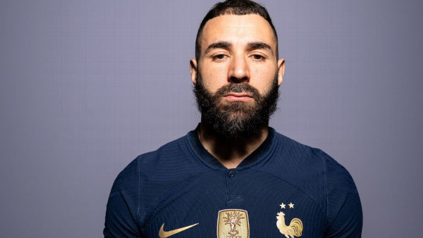

Tudo sobre esportes
Das 'emoções' aos discursos no vestiário: como Argentina e França se preparam para final da Copa do Mundo?
Argentina e França farão no domingo um dos maiores jogos de suas histórias pelo tricampeonato da Copa do Mundo
Como se preparar para aquele de deve ser um dos grandes momentos de sua vida? O que fazer? Como dormir? O que pensar? São perguntas que estão passando neste momento pela cabeça de jogadores e membros da comissão técnica de Argentina e França, na véspera da final da Copa do Mundo, que acontece neste domingo, às 12h (horário de Brasília), no Estádio Lusail.
É verdade que não é uma novidade para todos. Na França, por exemplo, há nove remanescentes da decisão contra a Croácia, coroada com título há quatro anos, na Rússia, além do técnico Didier Deschamps, comandante daquela equipe a ainda campeão como jogador em 1998.
Entre os "aspectos" que Lloris cita, entra o fator emocional. Algo difícil de controlar, mas que as duas seleções sabem que precisarão trabalhar principalmente com os mais jovens. Enzo Fernández, pela Argentina, deve ser o mais novo em campo, com só 21 anos, mas o companheiro Julián Alvaréz ou Aurélien Tchouaméni, da França, não ficam muito a frente, com 22.
"Para a final, a preparação é diferente. Porque as emoções podem atingir os jogadores de forma diferente", disse
Deschamps. "Quando é a primeira final, o jogador não sabe como vai reagir. Já, quando você jogou várias finais, ajuda. Mas isso não quer dizer que, por ser sua primeira, você não consegue lidar bem. É (preciso) controlar as emoções", complementou.
É levando em consideração isso que Deschamps pensará qual será seu discurso no vestiário e na preleção. "Quando falo com o time ou com cada jogador, sempre tenho em mente que cada jogador é diferente."

Emojis
< br > ® © 😀 😄 😍 💗
Resultados
- Argentina campeã 1
- França em segundo lugar 2
- Croacia em terceiro lugar 3
Não chegaram na final
- Brasil
- Alemanha
- Espanha
Finalistas e não finalistas
- Argentina 1
- França 2
- Croacia 3
- Marrocos 4
- Argentina
- França
França terá 'delegação presidencial' para final com Pogba e Kanté, mas sem Benzema e Zidane

Jogadores da França que ficaram fora da Copa do Mundo por lesão irão acompanhar a final com o presidente do país, mas Benzema não é deles. Um avião liderado pelo presidente da França, Emmanuel Macron, vai viajar para o Qatar para a final da Copa do Mundo. Jogadores que perderam o Mundial por lesões estarão com essa delegação no Estádio Lusail para a partida contra a Argentina, mas Karim Benzema não é um deles. Segundo apurou a ESPN, o atacante Real Madrid, que já está treinando na Espanha após ficar de fora da Copa por uma lesão na coxa esquerda, rejeitou o convite, assim como Zinedine Zidane e Michel Platini, outras lendas da seleção. Vejá reportagem completa cessando o link.